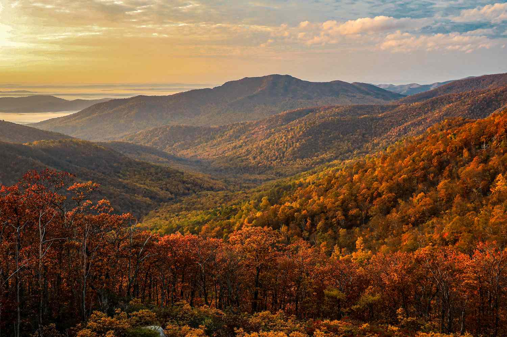

Region Description
The Appalachian Mountains are a mountain range in the eastern side of the Unites States.
It is generally considered the geographical divide between the eastern seaboard of the United States and the Midwest region on the country, because the Eastern Continental Divide follows them.
The mountain range goes through 14 states: Georgia, North Carolina, Tennessee, Virginia, West Virginia, Maryland, Pennsylvania, New Jersey, New York, Connecticut, Massachusetts, Vermont, New Hampshire, and Maine.
They are the second largest mountain range, stretching 1,500 miles and covering 68,100mi2 of the United States; much less than the size of the Rockies (3,000mi; 300,000mi2).
Elevations range from 300ft to 6,000ft, but the highest point is in the South at Mount Mitchell, California where the elavation reaches 6,684ft tall.

The Appalachian Mountains' climate temperature ranges from about below 50F in the north, to about 64F in the south.
All areas of the mountain range are subject to frost during colder seasons.
Annual precipitation varies from 30in in the valleys to up to 80in on the highest peaks; the highest in the United States. Snowfall is about 24in to 30in.
Its biome is known as Temperate broadleaf and mixed forests.
This means that its producers are mainly deciduous trees, which lose thier leaves in the fall/winter.
Appalachia is an amazing mountain range that we need to try and preserve in its natural state for as long as we can.
These ancient mountains were formed over 400 million years ago, and many animals depend on the climate here to stay healthy.
Deforestation, urban development, mining, agriculture, unsustainable forestry and fragmentation caused by dams and roads put the region's public, economic and ecological health at risk.
We need to preserve the Applachians so that the the 80,000 occurences of rare species living here; and other animals such as bobcats, black bears, moose, elk, and 64 high-priority bird species that use the mountains and valleys as a migration corridor, can continue to do so as they have been.